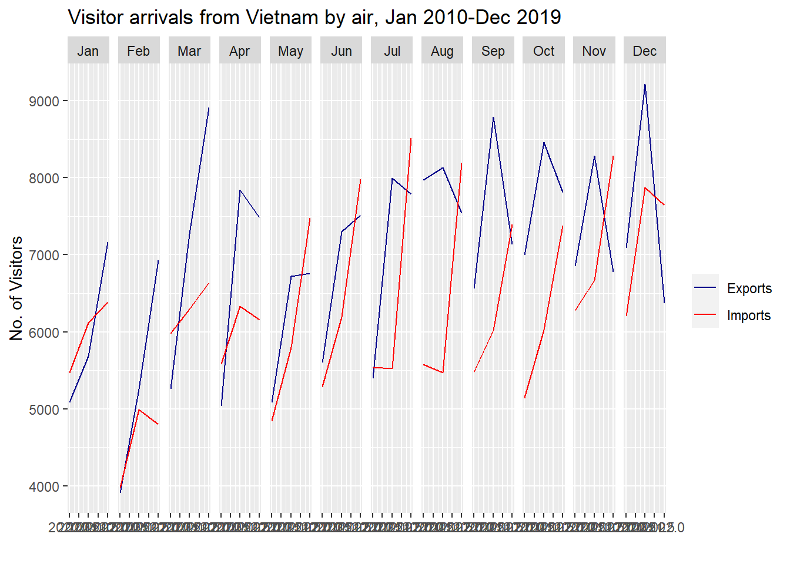

pacman::p_load(scales, viridis, lubridate, ggthemes, gridExtra, tidyverse, readxl, knitr, data.table, readxl, lubridate, stringr, dplyr, gganimate, transformr, patchwork, countrycode)Take-Home_Ex04
Overview
The objective is to uncover the impact of COVID-19 as well as the global & political dynamic in 2022 on Singapore’s bilateral trade.
The primary focus is on the period between January 2020 and December 2022.
Data
The merchandise trade data is available at Data.gov.sg under the sub-section of Merchandise Trade by Region/Market. The data is downloaded by clicking on the link Download all in Excel under the previously mentioned sub-section.
Data Preparation
Load the packages
The required packages are to be loaded for the purpose of visualization.
Load the data
Run the following code to load the imported data for continents and countries.
imported_continents <- read_excel("data/Merchandise Trade by RegionMarket.xlsx",
sheet = "T1",
range = cell_rows(10:16))%>%
select(`Data Series`, contains(c("2020", "2021", "2022"))) %>%
slice(-1)
imported_continents# A tibble: 5 × 37
`Data Series` 2020 …¹ 2020 …² 2020 …³ 2020 …⁴ 2020 …⁵ 2020 …⁶ 2020 …⁷ 2020 …⁸
<chr> <dbl> <dbl> <dbl> <dbl> <dbl> <dbl> <dbl> <dbl>
1 America (Mill… 4676. 4588. 4870. 4886. 4132 4667. 4686. 4259
2 Asia (Million… 28200. 25845. 26128. 27823. 26052. 26767. 24779. 21719.
3 Europe (Milli… 6087. 6134. 6285. 5317. 5225 5475. 4961. 4629
4 Oceania (Mill… 541. 1413. 577. 478. 586. 493. 456. 442.
5 Africa (Milli… 649. 499. 314. 297. 476. 441. 238. 410.
# … with 28 more variables: `2020 Apr` <dbl>, `2020 Mar` <dbl>,
# `2020 Feb` <dbl>, `2020 Jan` <dbl>, `2021 Dec` <dbl>, `2021 Nov` <dbl>,
# `2021 Oct` <dbl>, `2021 Sep` <dbl>, `2021 Aug` <dbl>, `2021 Jul` <dbl>,
# `2021 Jun` <dbl>, `2021 May` <dbl>, `2021 Apr` <dbl>, `2021 Mar` <dbl>,
# `2021 Feb` <dbl>, `2021 Jan` <dbl>, `2022 Dec` <dbl>, `2022 Nov` <dbl>,
# `2022 Oct` <dbl>, `2022 Sep` <dbl>, `2022 Aug` <dbl>, `2022 Jul` <dbl>,
# `2022 Jun` <dbl>, `2022 May` <dbl>, `2022 Apr` <dbl>, `2022 Mar` <dbl>, …imported_countries <- read_excel("data/Merchandise Trade by RegionMarket.xlsx",
sheet = "T1",
range = cell_rows(10:101))%>%
select(`Data Series`, contains(c("2020", "2021", "2022"))) %>%
slice(-1:-7)
imported_countries# A tibble: 84 × 37
`Data Series` 2020 …¹ 2020 …² 2020 …³ 2020 …⁴ 2020 …⁵ 2020 …⁶ 2020 …⁷ 2020 …⁸
<chr> <dbl> <dbl> <dbl> <dbl> <dbl> <dbl> <dbl> <dbl>
1 Belgium (Tho… 133445 209539 83657 80823 99286 102317 73457 77945
2 Denmark (Tho… 143209 45010 43480 70494 44398 95598 41203 65305
3 France (Thou… 1141603 1498854 1922407 1167166 922015 1088034 895505 690063
4 Germany, Fed… 980296 978208 980882 972416 931876 1061128 978806 892172
5 Greece (Thou… 10429 10423 11378 11241 11809 11655 11839 11181
6 Ireland (Tho… 250720 252154 187158 112631 94134 104004 111688 93891
7 Italy (Thous… 613730 476816 487904 409767 461599 382371 442728 295412
8 Luxembourg (… 11891 3758 14577 3471 3479 29389 23619 3436
9 Netherlands … 257892 296798 303736 373881 286459 252322 273072 255200
10 United Kingd… 755324 635420 802840 762179 863043 830637 739542 1104023
# … with 74 more rows, 28 more variables: `2020 Apr` <dbl>, `2020 Mar` <dbl>,
# `2020 Feb` <dbl>, `2020 Jan` <dbl>, `2021 Dec` <dbl>, `2021 Nov` <dbl>,
# `2021 Oct` <dbl>, `2021 Sep` <dbl>, `2021 Aug` <dbl>, `2021 Jul` <dbl>,
# `2021 Jun` <dbl>, `2021 May` <dbl>, `2021 Apr` <dbl>, `2021 Mar` <dbl>,
# `2021 Feb` <dbl>, `2021 Jan` <dbl>, `2022 Dec` <dbl>, `2022 Nov` <dbl>,
# `2022 Oct` <dbl>, `2022 Sep` <dbl>, `2022 Aug` <dbl>, `2022 Jul` <dbl>,
# `2022 Jun` <dbl>, `2022 May` <dbl>, `2022 Apr` <dbl>, `2022 Mar` <dbl>, …Similar to the way imported data is imported, import the exported data from the sheet T2.
Exported Data Code
exported_continents <- read_excel("data/Merchandise Trade by RegionMarket.xlsx",
sheet = "T2",
range = cell_rows(10:16))%>%
select(`Data Series`, contains(c("2020", "2021", "2022"))) %>%
slice(-1)
exported_countries <- read_excel("data/Merchandise Trade by RegionMarket.xlsx",
sheet = "T2",
range = cell_rows(10:101))%>%
select(`Data Series`, contains(c("2020", "2021", "2022"))) %>%
slice(-1:-7)Analyze and Clean Data
Here are the following observations after scanning through the data,
- The data consists of the merchandise exports and imports by Region/Market monthly in two different worksheets.
- The data consists of both country and continental merchandise exports and imports amount.
- The data is inconsistent as the country exports and imports amount are in thousands while the continental exports and imports amount are in millions.
To clean the data the following steps are followed,
- Pivot the import and export details of countries and continents,
importCountryDataPivot <- imported_countries %>%
pivot_longer(cols = 2:37, names_to = "yearmonth", values_to = "Imports" )
importContinentDataPivot <- imported_continents %>%
pivot_longer(cols = 2:37, names_to = "yearmonth", values_to = "Imports" )
exportCountryDataPivot <- exported_countries %>%
pivot_longer(cols = 2:37, names_to = "yearmonth", values_to = "Exports" )
exportContinentDataPivot <- exported_continents %>%
pivot_longer(cols = 2:37, names_to = "yearmonth", values_to = "Exports" )
colnames(importCountryDataPivot) <- c("Country", "Date", "Imports")
colnames(importContinentDataPivot) <- c("Continent", "Date", "Imports")
colnames(exportCountryDataPivot) <- c("Country", "Date", "Exports")
colnames(exportContinentDataPivot) <- c("Continent", "Date", "Exports")- To make the data consistent, convert the country’s merchandise imports and exports into millions.
importCountryDataPivot$Imports <- ifelse(grepl("(Thousand Dollars)", importCountryDataPivot$Country, fixed = TRUE), importCountryDataPivot$Imports/1000, importCountryDataPivot$Imports)
importContinentDataPivot$Imports <- ifelse(grepl("(Thousand Dollars)", importContinentDataPivot$Continent, fixed = TRUE), importContinentDataPivot$Imports/1000, importContinentDataPivot$Imports)
exportCountryDataPivot$Exports <- ifelse(grepl("(Thousand Dollars)", exportCountryDataPivot$Country, fixed = TRUE), exportCountryDataPivot$Exports/1000, exportCountryDataPivot$Exports)
exportContinentDataPivot$Exports <- ifelse(grepl("(Thousand Dollars)", exportContinentDataPivot$Continent, fixed = TRUE), exportContinentDataPivot$Exports/1000, exportContinentDataPivot$Exports)- To remove the (Thousand Dollars) and (Million Dollars) appended to each row.
importCountryDataPivot$Country<-gsub(" [(]Thousand Dollars[)]","",as.character(importCountryDataPivot$Country))
importContinentDataPivot$Continent<-gsub(" [(]Thousand Dollars[)]","",as.character(importContinentDataPivot$Continent))
exportCountryDataPivot$Country<-gsub(" [(]Thousand Dollars[)]","",as.character(exportCountryDataPivot$Country))
exportContinentDataPivot$Continent<-gsub(" [(]Thousand Dollars[)]","",as.character(exportContinentDataPivot$Continent))
importCountryDataPivot$Country<-gsub(" [(]Million Dollars[)]","",as.character(importCountryDataPivot$Country))
importContinentDataPivot$Continent<-gsub(" [(]Million Dollars[)]","",as.character(importContinentDataPivot$Continent))
exportCountryDataPivot$Country<-gsub(" [(]Million Dollars[)]","",as.character(exportCountryDataPivot$Country))
exportContinentDataPivot$Continent<-gsub(" [(]Million Dollars[)]","",as.character(exportContinentDataPivot$Continent))- To cast the yearmonth column into Date type.
importCountryDataPivot$Date <- as.Date(paste(importCountryDataPivot$Date, "01"), format = "%Y %b %d")
importContinentDataPivot$Date <- as.Date(paste(importContinentDataPivot$Date, "01"), format = "%Y %b %d")
exportCountryDataPivot$Date <- as.Date(paste(exportCountryDataPivot$Date, "01"), format = "%Y %b %d")
exportContinentDataPivot$Date <- as.Date(paste(exportContinentDataPivot$Date, "01"), format = "%Y %b %d")- Pivot the countries into the required format for cycleplot.
importCountryDataCyclePivot <- importCountryDataPivot %>%
pivot_wider(names_from = "Country", values_from = "Imports" )
exportCountryDataCyclePivot <- exportCountryDataPivot %>%
pivot_wider(names_from = "Country", values_from = "Exports" )- To add month and year columns to the data for further use.
importCountryDataCyclePivot$month <- factor(month(importCountryDataCyclePivot$`Date`),
levels=1:12,
labels=month.abb,
ordered=TRUE)
importCountryDataCyclePivot$year <- year(ymd(importCountryDataCyclePivot$`Date`))
importContinentDataPivot$month <- factor(month(importContinentDataPivot$`Date`),
levels=1:12,
labels=month.abb,
ordered=TRUE)
importContinentDataPivot$year <- year(ymd(importContinentDataPivot$`Date`))
exportCountryDataCyclePivot$month <- factor(month(exportCountryDataCyclePivot$`Date`),
levels=1:12,
labels=month.abb,
ordered=TRUE)
exportCountryDataCyclePivot$year <- year(ymd(exportCountryDataCyclePivot$`Date`))
exportContinentDataPivot$month <- factor(month(exportContinentDataPivot$`Date`),
levels=1:12,
labels=month.abb,
ordered=TRUE)
exportContinentDataPivot$year <- year(ymd(exportContinentDataPivot$`Date`))Continent & Country Trade Visual Analysis
- The overall import trade follows similar trend, with Asia having the highest import price, and Africa and Oceania being the lowest.
- Since the time period is during COVID-19, the import trade price has reduced in March/April of 2020, possibly due to lockdown.
- The Europe and America has an average of over 5000 Million Dollars throughout the time period.
- Asian region has a noticable difference in price trend, whereas the other continents have a constant throughout this period
- The export trend of Asian continent similar to import has an average trade price of 35000 Million Dollars, with minimum of 24000M$ during peak covid in March 2020, and reaching maximum of 46000M$ in Q2&Q3 of 2022, suggesting the exports improved post-covid. - The export performance of Europe and America follow a similar trend with an average of 6500M$ over the years, followed by Oceania with an average of about 2000M$, and Africa being the least of all. - Asian countries seem to have high demand in imports and exports as interpreted from the graph

Imports: - The overall imports observed are gradually increasing across the years.
- The Maximum import is observed in China is in 2018-2019 July, it being a seasonal time increasing the demand - There is very less change in import quantity during the Month of March during this decade - There is a gradual increase observed from 2010-2015, with decrease in import price in some months such as Dec, Feb, and April, and gradual increase across all the other months from 2015-2019.
Exports:
- The export has increased gradually from 2010-2016 for all months, after which the monthly export is improving for some months such as Jan, Feb, March (with maximum of 8800M$), and all the other month the export price has sharply dropped. - The maximum export price in China is observed in 2016 December with over 9000M$. - While the export has reduced over the years from 2016, leading to decrease upto 6500M$ in Dec 2019.
Imports: - In comparison, the imports in India are lesser than the exports, with an average price of 800M$ for import. - The seasonal pattern of increase in import can be observed in July. - Over the years, the import price has increased and decreased for some months such as Dec, and No.
- Gradual increase is observed in the other months over the years
Exports:
- The exports price are much more in India than inputs, maybe due to large scale production of food, grains, silk and other essentials. - Across the years, a decent increase in the import trade can be observed. - The trade has decreased from 2016-2019 in the month of Oct and Nov, otherwise the export performance is quite good.
Imports: - The import price is slightly higher than the export price in Malaysia, and the trend is gradually increasing across the decade, except in Dec. In Dec, the trend is dropping from 2016-2019. - March has the highest import, could also support this inference with the festival season of Hari Raya Pussa in Malaysia.
Exports:
- Exports are high during May, June, and July, with an average price of 6500M$ - The overall trend of the export increases over the years.
Imports: - The imports in Hong Kong, unlike the other countries, is very menial with less than 1000M$ price - The importing has a trend that is going down over the years especially during months such as Oct, Nov, Dec - Only during Jan and May, there is some positive trend in the imports but with very small slope
Exports:
- Export on the other hand, is very good for HK, with an overall avg of 7000M$ over the years - A steady increase is observed from 2010 to 2015, and after that gradually increases for some months such as Jan, May, June suggesting festival/seasonal months, and decreases for some months such as Oct, Nov and Dec
Imports: - Taiwan has high import price than export, suggesting the country size and resources - There is an overall increase in import price from Jan-Aug during the decade. Decreases after 2015 for some months such as Sep,Nov and Dec Exports: - The exports follow the same pattern as imports in terms of trend, however the price of the exports are much lesser than the imports.
Conclusion:
- China has the maximum import and export price when compared to all other countries. - Malaysia follows China in Import price, and HK follows China in Export price. - India has the least import and export price when compared to the other.